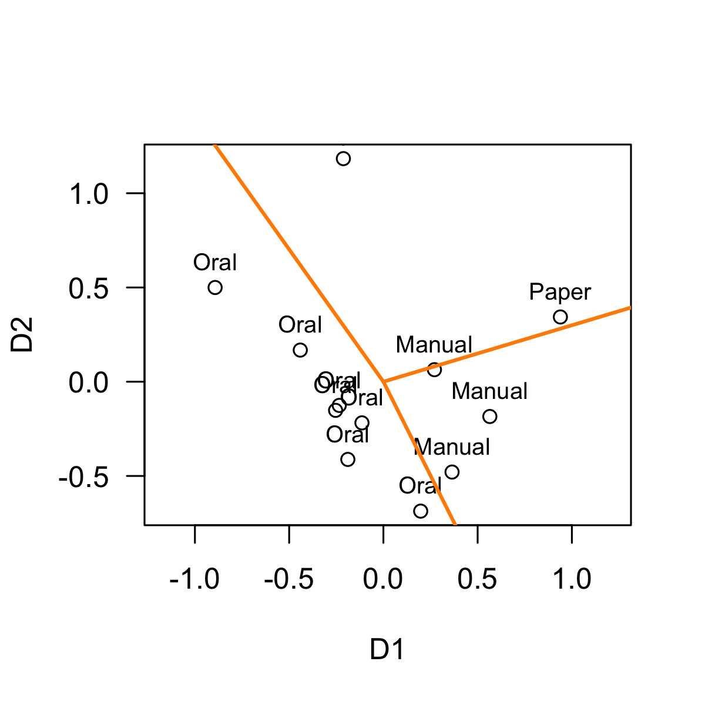
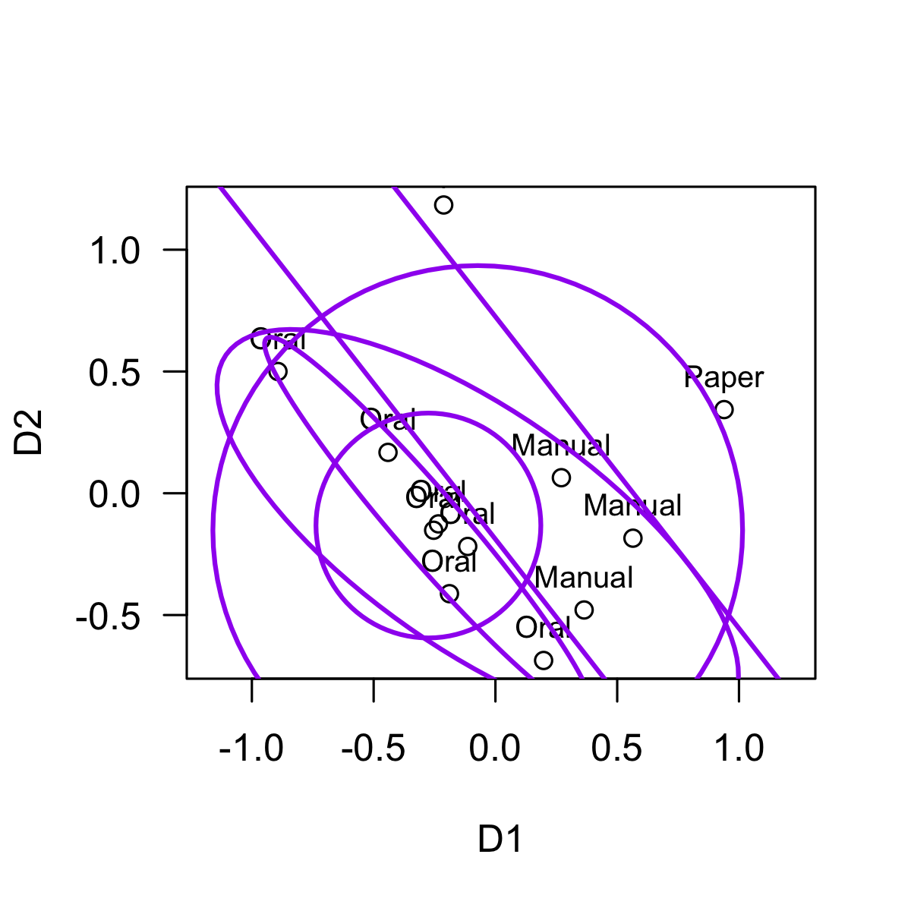

FacetedPartitions.RmdFacet Theory (FT) is a meta-approach to empirical research proposed by Louis Guttman ( ) and since then developed by many others ( ). We strongly advise to acquire a basic understanding of FT before using this package, for example Shye (1998). An essential step in FT applications is Multidimensional Scaling (MDS) of similarities/distances; for introductions see Borg and Groenen (2005), and also refer to the vignettes of the smacof package, to which this package is closely related and which should be installed when using facpart.
Assume you are studying some domain (e. g., intelligence), and you measure a set of items from that domain, say intelligence test items. Theoretically, each item is classified according to the elements of a facet: With respect to intelligence items, a typical facet is the modality of the test item, with elements being verbal, numerical, and figural. Thus, each test item is mapped onto exactly one of these categories. The theory is assumed to be confirmed if these elements can be identified as geometrical patterns in an empirical space of the test items.
The canonical approach is to submit the correlations among the items to a multidimensional scaling procedure. As a result we obtain 2-dimensional (or higher dimensional) configurations of points (= items), with highly correlated items being close to each other, and items with small or negative correlations being farther apart. This configuration serves as the starting point to search for patterns according to the theoretical classification from the faceted definition. A simple pattern might be that all items belonging to a specific category (e. g., verbal items) are in close vicinity, but apart from items of a different category. If no such separation can be detected, the theory must be modified.
The patterns emphasized by FT are called regional partitions. Three types of partitions are commonly identified:
Axial partition: categories are separated by straight parallel lines.
Radial partition: categories are separated by nested circles.
Angular partition: categories are separated by lines with different angles from a common origin.
This will become clear from the examples below. The facpart package provides functions to search for best fitting partitions.
As an example we take the Intelligence study (Guttman & Levy, 1991). The correlation matrix of 12 intelligence test items and the assignment to two facets (Material, Modality) is provided in the gutt91 data file (slightly modified from Guttman1991 from the smacof package). We extract the correlation matrix and the facet variables.
library(facpart)
#> Loading required package: plotrix
#> Loading required package: gtools
data(gutt91)
Kor <- gutt91$gutt91_cor
Facets <- gutt91$gutt91_var
round(Kor, 2)
#> Information Similarities Arithmetic Vocabulary Comprehension
#> Information 1.00 0.62 0.54 0.55 0.42
#> Similarities 0.62 1.00 0.69 0.36 0.48
#> Arithmetic 0.54 0.47 1.00 0.40 0.40
#> Vocabulary 0.69 0.67 0.52 1.00 0.28
#> Comprehension 0.55 0.59 0.44 0.66 1.00
#> DigitSpan 0.36 0.34 0.45 0.38 0.26
#> PictureCompletion 0.40 0.46 0.34 0.43 0.41
#> PictureArrangement 0.42 0.41 0.30 0.44 0.40
#> BlockDesign 0.48 0.50 0.46 0.48 0.44
#> ObjectAssembly 0.40 0.41 0.29 0.39 0.37
#> Coding 0.28 0.28 0.32 0.32 0.26
#> Mazes 0.27 0.28 0.27 0.27 0.29
#> DigitSpan PictureCompletion PictureArrangement BlockDesign
#> Information 0.27 0.46 0.52 0.32
#> Similarities 0.47 0.41 0.44 0.27
#> Arithmetic 0.67 0.50 0.45 0.66
#> Vocabulary 0.59 0.41 0.34 0.38
#> Comprehension 0.34 0.28 0.30 0.43
#> DigitSpan 1.00 0.28 0.46 0.44
#> PictureCompletion 0.21 1.00 0.29 0.48
#> PictureArrangement 0.22 0.40 1.00 0.39
#> BlockDesign 0.31 0.52 0.46 1.00
#> ObjectAssembly 0.21 0.48 0.42 0.60
#> Coding 0.29 0.19 0.25 0.33
#> Mazes 0.22 0.34 0.32 0.44
#> ObjectAssembly Coding Mazes
#> Information 0.32 0.21 0.34
#> Similarities 0.27 0.22 0.46
#> Arithmetic 0.26 0.31 0.42
#> Vocabulary 0.41 0.21 0.25
#> Comprehension 0.40 0.29 0.32
#> DigitSpan 0.44 0.22 0.60
#> PictureCompletion 0.37 0.40 0.33
#> PictureArrangement 0.26 0.52 0.44
#> BlockDesign 0.29 0.48 0.24
#> ObjectAssembly 1.00 0.19 0.37
#> Coding 0.24 1.00 0.21
#> Mazes 0.37 0.21 1.00
Facets
#> items Material Modality
#> 1 Information Oral verbal
#> 2 Similarities Oral verbal
#> 3 Arithmetic Oral numerical
#> 4 Vocabulary Oral verbal
#> 5 Comprehension Oral verbal
#> 6 DigitSpan Oral numerical
#> 7 PictureCompletion Oral figural
#> 8 PictureArrangement Manual figural
#> 9 BlockDesign Manual figural
#> 10 ObjectAssembly Manual figural
#> 11 Coding Paper numerical
#> 12 Mazes Paper figuralIn the Facets dataframe we can see that the first facet Material assigns to each item the materiality of the task the item represents: It can be ‘oral’ if it is just based on oral communication, or ‘manual’ if the participant has to actually do something with his or her hands, or ‘paper’ if the item requires to read/write from a sheet of paper. The second facet Modality defines the symbol system involved: ‘verbal’ refers to text in natural language, ‘numerical’ refers to numbers and mathematical notation, and ‘figural’ refers to drawings, geometric shapes, etc.
Theoretically, we expect that these distinctions show up in specific patterns or partitions of a geometrical representation of the items. Thus, we perform a multidimensional scaling analysis of the correlation matrix. Since MDS takes distances as input data, we have to convert the correlation matrix (which are similarities) to distances. The conversion of correlations to distances follows the equation
The distances are then submitted to MDS. For converting and for MDS we use functions from the smacof package.
Kor_D <- smacof::sim2diss(Kor, method = "corr", to.dist = TRUE)
gutt91_mds <- smacof::mds(Kor_D, type = "ordinal")
gutt91_mds
#>
#> Call:
#> smacof::mds(delta = Kor_D, type = "ordinal")
#>
#> Model: Symmetric SMACOF
#> Number of objects: 12
#> Stress-1 value: 0.102
#> Number of iterations: 67The Stress-1 value of the resulting 2-dimensional configuration is
0.102 which is usually considered a good fit (note that
currently facpart only applies to 2-dimensional
configurations). To plot the fit we can simply take the output object
gutt91_mds as argument for the plot function. However, usually
another approach is preferable which gives more control; in particular,
we want the facet elements as labels, not the item names. Thus, we first
plot only the coordinates of the 12 items, which are in
gutt91_mds$conf. Then we add the facet labels for
Material with the text() function; the labels are
in the Facets data frame. The resulting plot now nicely shows the
configuration of the three categories for materiality, and we can check
if a regular pattern can be identified.
plot(gutt91_mds)
plot(gutt91_mds$conf,
asp = 1, las = 1)
text(gutt91_mds$conf, labels = Facets$Material,
cex = 0.8, pos = 3)
abline(v=0); abline(h=0)Let’s assume that our theory predicts that the Material facet can be
partitioned according to an angular partition, that is, from a
common origin, lines or rays of different angles divide the space into
wedge-like regions. The angularPartition() function does
exactly this: It searches for a best fitting angular partition, so that
each region contains only items of one specific facet element. If that
is not perfectly possible, it minimizes the number of misclassified
items and yields the best possible partitioning. The necessary arguments
are the point coordinates (crd =), and the facet labels for each point
(group =). The coordinates must be a numeric matrix or data frame with
two columns, and the facet labels must be a factor with levels
corresponding to the labels.
plot(gutt91_mds$conf,
asp = 1, las = 1)
text(gutt91_mds$conf, labels = Facets$Material,
cex = 0.8, pos = 3)
angularPartition(crd = gutt91_mds$conf,
group = Facets$Material, add = TRUE)
#> $cuts
#> PictureCompletion BlockDesign Coding
#> -1.1055948 0.2911366 2.1897593
#>
#> $margin
#> [1] 0.01656079
#>
#> $misclass
#> [1] 0
#>
#> $misclass_points
#> [1] x y label
#> <0 rows> (or 0-length row.names)
#>
#> $sector
#> [1] 2 2 2 2 2 2 2 3 3 3 1 1
#>
#> $majority
#> [1] "Paper" "Oral" "Manual"
#>
#> $center
#> [1] 3.145632e-16 1.110223e-16
#>
#> $pt_angles
#> Information Similarities Arithmetic Vocabulary
#> -2.6020094 -2.0511100 2.7780239 -2.6488194
#> Comprehension DigitSpan PictureCompletion PictureArrangement
#> -2.0000848 2.6312076 -1.2902663 -0.9209234
#> BlockDesign ObjectAssembly Coding Mazes
#> 0.2315753 -0.3157876 1.7483111 0.3506980The partition lines are drawn into the existing plot, emerging from a center at (0,0), and separating the configuration into three regions: an upper wedge containing the two Paper items, a lower right wedge containing the three Manual items, and a left wedge containing the Oral items. No misclassified items are observed.
Just for demonstration purposes, we add the partions obtained by the other major functions (axial, circles, ellipses):
plot(gutt91_mds$conf,
asp = 1, las = 1)
text(gutt91_mds$conf, labels = Facets$Material,
cex = 0.8, pos = 3)
axialLines(crd = gutt91_mds$conf,
group = Facets$Material)
#> $slope
#> [1] -1.279942
#>
#> $intercepts
#> [1] -0.1885547 0.7250697
#>
#> $angle
#> [1] 0.6632251
#>
#> $margin
#> [1] 0.108049
#>
#> $misclass
#> [1] 0
#>
#> $misclass_points
#> [1] x y label
#> <0 rows> (or 0-length row.names)
#>
#> $sector
#> [1] 1 1 1 1 1 1 1 2 2 2 3 3
#>
#> $majority
#> [1] "Oral" "Manual" "Paper"
radialCircles(crd = gutt91_mds$conf,
group = Facets$Material)
#> $cx
#> [1] -0.27519590 -0.07266533
#>
#> $cy
#> [1] -0.1324648 -0.1527139
#>
#> $radii
#> [1] 0.4616087 1.0874684
#>
#> $misclass
#> [1] 2
#>
#> $misclass_points
#> x y label
#> DigitSpan -0.8928474 0.4998734 Oral
#> PictureCompletion 0.1978224 -0.6865776 Oral
#>
#> $sector
#> [1] 1 1 1 1 1 2 2 2 2 2 3 3
#>
#> $majority
#> [1] "Oral" "Manual" "Paper"
radialEllipses(crd = gutt91_mds$conf,
group = Facets$Material)
#> $cx
#> [1] -0.27519590 -0.07266533
#>
#> $cy
#> [1] -0.1324648 -0.1527139
#>
#> $a
#> [1] 1.015923 1.260164
#>
#> $b
#> [1] 0.1361728 0.4894227
#>
#> $angle
#> [1] 2.284205 2.532150
#>
#> $misclass
#> $misclass$n
#> [1] 0
#>
#> $misclass$indices
#> integer(0)
#>
#>
#> $misclass_points
#> [1] x y label
#> <0 rows> (or 0-length row.names)
#>
#> $sector
#> [1] 1 1 1 1 1 1 1 2 2 2 3 3
#>
#> $majority
#> [1] "Oral" "Manual" "Paper"To summarize, the basic workflow is:
Construct a distance matrix D (or correlation matrix K)
of a set of n items. If necessary, convert K to D with
smacof::sim2diss().
Construct facet labels: Assign to each of n items exactly one of k (k < n) labels corresponding to their facet elements. Store the assignment as a factor F with length = n (same item order as in D).
Apply multidimensional scaling to D, such as
smacof::mds(D, ndim = 2, type = "ordinal"). Check for fit
and store the result object, for example as out_mds.
Plot the point configuration, for example
plot(out_mds).
Apply one of the partition functions; necessary
arguments are crd (the point coordinates) and
group (the facet assignments).
Check the resulting plot.
More details will be provided in the following discussions of the major partition functions.
An axial partition partitions the configuration into stripes separated by parallel lines. For example, two parallel lines divide the configuration into three stripes or bands, inducing an order along a dimension (a simplex). If each stripe contains exactly one type of facet element, we will have a perfect separation of facet elements. If we have two facets, and each facet yields an axial partition (with approximately orthogonal dimensions), the resulting pattern is called a duplex.
In the simple case of only two facet elements, a single line suffices to separate the two elements. This is basically equivalent to linear discriminant analysis, with the point coordinates serving as the independent and the facet elements as the dependent grouping variable. The partitioning line will then be orthogonal to the discriminant function.